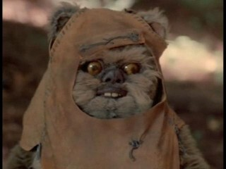
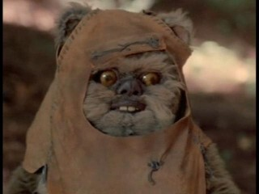
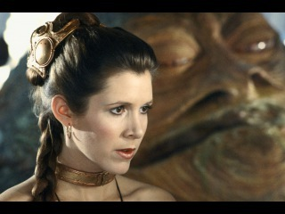
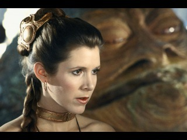

Dream Team
 

 



Давным-давно в далекой Галактике... Старая Республика пала. На ее руинах Орден ситов создал галактическую Империю, подчиняющую одну за другой планетные системы. Силы Альянса стремятся свергнуть Темного Императора и восстановить свободное правление в Галактике. Генерал Оби-Ван Кеноби возвращается после многолетнего уединения, чтобы снова сойтись в поединке с Повелителем Тьмы Дартом Вейдером. Вместе с ним на светлой стороне Силы – юный пилот Люк, сын Анакина Скайуокера, принцесса-сенатор Лейя Органа, легендарный коррелианский контрабандист Хан Соло и его друг вуки Чубакка.